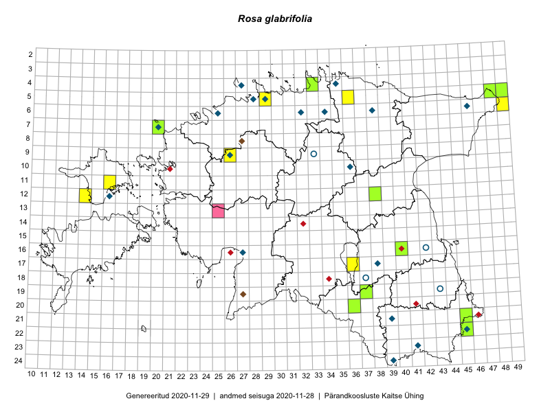

Rosa glabrifolia — paljalehine kibuvits
Rosaceae :: Rosa glabrifolia C.A.Mey. ex Rupr. (38)

Kaart põhineb 41 kirjel:
vaatlusi 8
herbaareksemplare 30
PKÜ kirjeid1 3
Taime kaasaegsed ja ajaloolised leiukohad asuvad 31 ruudus.
Tingmärgid ja ruutude arvud periooditi (U2 / V3 )
█ 2006–2020 (15/–)
◆/◇ 1971–2005 (16/15)
○ 1921–1970 (1/3)
+ kuni 1920 (0/0)
× hävinud (–/0)
? kaheldav (–/0)
| Ruut | Leidja(d) | Leiuaeg | Kirje |
|---|---|---|---|
| 10-36 | 1998-10-03 | ruut/ala: Rosa glabrifolia C.A.Mey. ex Rupr. | |
| 06-32 | T. Nurmela | 1986-06-26–1986-08-14 | ruut/ala: Rosa glabrifolia C.A.Mey. ex Rupr. |
| 16-27 | T. Kukk | 1999 | ruut/ala: Rosa glabrifolia C.A.Mey. ex Rupr. |
| 11-16 | Eeva-Maria Jeletsky, Tarmo Niitla | 2015-06-20 | ruut/ala: Rosa glabrifolia C.A.Mey. ex Rupr. |
| 12-14 | Eeva-Maria Jeletsky, Tarmo Niitla | 2015-06-25 | ruut/ala: Rosa glabrifolia C.A.Mey. ex Rupr. |
| 19-37 | Eeva-Maria Jeletsky, Tarmo Niitla | 2015-08-10 | ruut/ala: Rosa glabrifolia C.A.Mey. ex Rupr. |
| 17-36 | Helle Mäemets, Mare Leis, Malle Timm | 2015-06-25 | ruut/ala: Rosa glabrifolia C.A.Mey. ex Rupr. |
| 06-49 | Toomas Kukk | 2016-07-23 | ruut/ala: Rosa glabrifolia C.A.Mey. ex Rupr. |
| 05-29 | Toomas Kukk | 1997-08-21 | TAA0015249: Rosa glabrifolia C.A.Mey. ex Rupr. |
| 16-27 | Toomas Kukk | 1998-07-07 | TAA0015250: Rosa glabrifolia C.A.Mey. ex Rupr. |
| 12-16 | Toomas Kukk | 2005-07-14 | TAA0015251: Rosa glabrifolia C.A.Mey. ex Rupr. |
| 23-41 | E. Lotamois | 1974-06-17 | TAA0015252: Rosa glabrifolia C.A.Mey. ex Rupr. |
| 23-41 | E. Lotamois | 1974-06-17 | TAA0015254: Rosa glabrifolia C.A.Mey. ex Rupr. |
| 24-39 | Kuulo Kalamees | 2002-06-02 | TAA0015258: Rosa glabrifolia C.A.Mey. ex Rupr. |
| 16-42 | Maret Kask | 1967-06-19 | TAA0015259: Rosa glabrifolia C.A.Mey. ex Rupr. |
| 06-46 | Toomas Kukk | 2001-08-17 | TAA0015261: Rosa glabrifolia C.A.Mey. ex Rupr. |
| 06-46 | Toomas Kukk | 2001-08-17 | TAA0015262: Rosa glabrifolia C.A.Mey. ex Rupr. |
| 07-20 | Toomas Kukk | 1993-07-30 | TAA0015264: Rosa glabrifolia C.A.Mey. ex Rupr. |
| 04-27 | Jüri Elliku | 2000-06-11 | TALL A006091: Rosa glabrifolia C.A.Mey. ex Rupr. |
| 21-39 | Tõnu Ploompuu | 1995-08-25 | TALL A008752: Rosa glabrifolia C.A.Mey. ex Rupr. |
| 21-39 | Tõnu Ploompuu | 1995-08-25 | TALL A008751: Rosa glabrifolia C.A.Mey. ex Rupr. |
| 09-26 | Tõnu Ploompuu | 1995-08-19 | TALL A008657: Rosa glabrifolia C.A.Mey. ex Rupr. |
| 04-27 | Tõnu Ploompuu | 1995-07-11 | TALL A008656: Rosa glabrifolia C.A.Mey. ex Rupr. |
| 07-20 | Olev Abner | 2007-07-07 | TALL A009272: Rosa glabrifolia C.A.Mey. ex Rupr. |
| 17-38 | P. Põldmaa | 1980-09-15 | TAM0054633: Rosa glabrifolia C.A.Mey. ex Rupr. |
| 06-38 | Marie Nelke | 1990 | TU369248: Rosa glabrifolia C.A.Mey. ex Rupr. |
| 16-40 | Thea Kull | 2015-07-30 | TAA0116915: Rosa glabrifolia C.A.Mey. ex Rupr. |
| 04-27 | Tõnu Ploompuu | 1993-08-10 | TALL A009886: Rosa glabrifolia C.A.Mey. ex Rupr. |
| 20-36 | Peedu Saar, Tarmo Niitla | 2016-06-14 | TAA0133025: Rosa glabrifolia C.A.Mey. ex Rupr. |
| 04-33 | Toomas Kukk, Rein Kalamees | 2015-09-23 | TAA0134965: Rosa glabrifolia C.A.Mey. ex Rupr. |
| 12-38 | Tarmo Niitla, Eeva-Maria Jeletsky | 2016-06-10 | TAA0136644: Rosa glabrifolia C.A.Mey. ex Rupr. |
| 05-49 | Toomas Kukk | 2012-08-04 | TAA0112409: Rosa glabrifolia C.A.Mey. ex Rupr. |
| 21-45 | Heldur Sander | 2011-06-15 | TAA0112614: Rosa glabrifolia C.A.Mey. ex Rupr. |
| 22-45 | Jaak-Albert Metsoja | 2016-06-15 | TAA0133824: Rosa glabrifolia C.A.Mey. ex Rupr. |
| 22-45 | Jaak-Albert Metsoja | 2016-06-15 | TAA0133825: Rosa glabrifolia C.A.Mey. ex Rupr. |
| 19-37 | Eeva-Maria Jeletsky, Tarmo Niitla | 2015-08-10 | TAA0119420: Rosa glabrifolia C.A.Mey. ex Rupr. |
| 05-48 | Peedu Saar, Toomas Kukk | 2018-09-04 | TAA0146853: Rosa glabrifolia C.A.Mey. ex Rupr. |
| 05-28 | Heinrich Aasamaa | 1978-10-04 | TAM0139888: Rosa glabrifolia C.A.Mey. ex Rupr. |
| 13-25 | 2006-06-08 | PKÜ: 12556 | |
| 19-27 | 2001-06-20 | PKÜ: 7002 | |
| 06-46 | 2001-08-17 | PKÜ: 8273 |
Pärandkoosluste Kaitse Ühingu (PKÜ) andmebaas sisaldab inventeeritud koosluste kirjeldusi ja liigiloendeid. Kõige enam on andmeid niidutaimede kohta.↩︎
Ruutude arv uue atlase andmekogu järgi. Muuhulgas arvestab vanemat herbaariumi, 2005. aasta atlase välitöölehtedelt uuesti digitaliseeritud andmeid jne. Uue atlase andmekogust pärinevad andmed on kaardile kantud siniste sümbolitega.↩︎
Ruutude arv 2005. aasta atlase (Kukk, T., Kull, T., Eesti taimede levikuatlas. Eesti Maaülikool, Põllumajandus- ja Keskkonnainstituut, Tartu, 2005) järgi. Andmeallikana on kasutatud levik.exe programmi, kus igas ruudus on registreeritud vaid uusim leid. Seetõttu on vanemate perioodide kohta andmed puudulikud. Kasutatud levik.exe andmestikus leidub mõningaid kõrvalekaldeid atlase trükis ilmunud versioonist, sagedamini tarnade ja käpaliste seas. Lisaks leidub selles andmestikus valik liike (peamiselt väheste leidudega tulnuktaimed), mille kaarte trükis ei avaldatud. Vana atlase andmed ruutudest, milles ei ole uue atlase andmekogus leide enne 2006. aastat, on kaardil esitatud punaste sümbolitega. Vana atlase andmetel hävinud ja kaheldavaid leiukohti pole hilisemate (taas)leidude põhjal korrigeeritud.↩︎